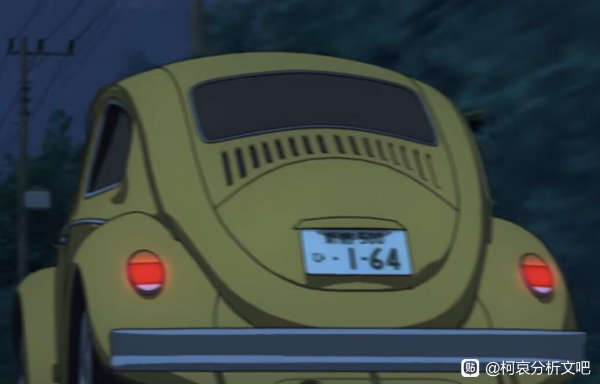
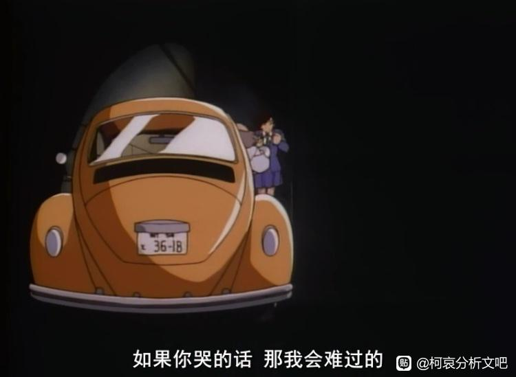
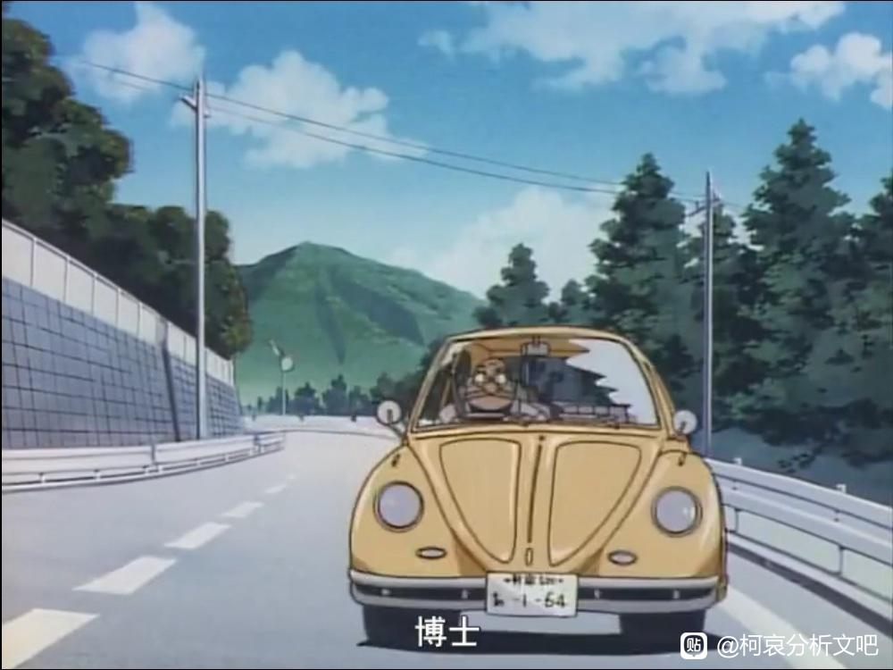
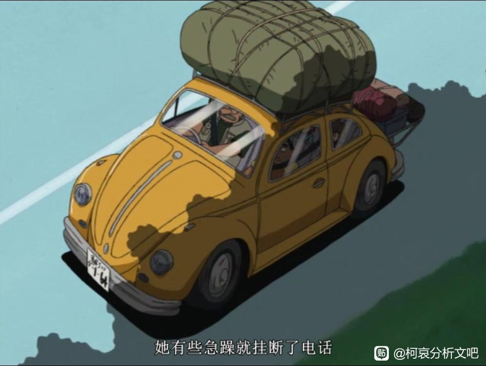
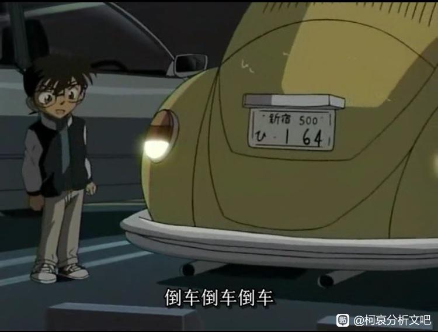
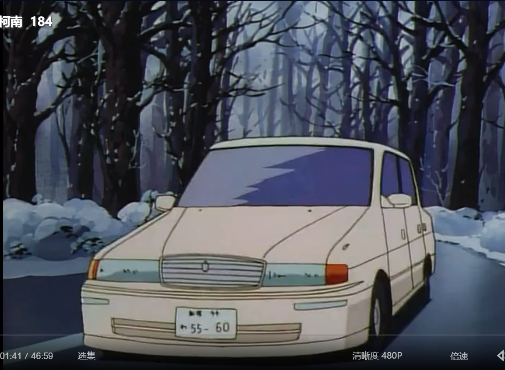
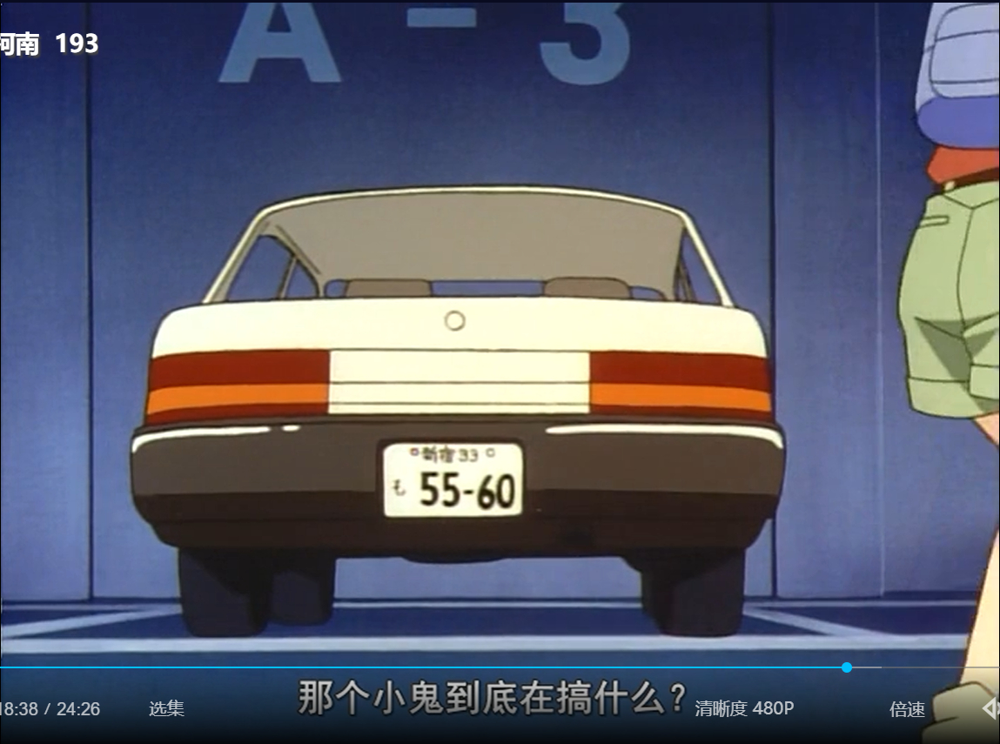
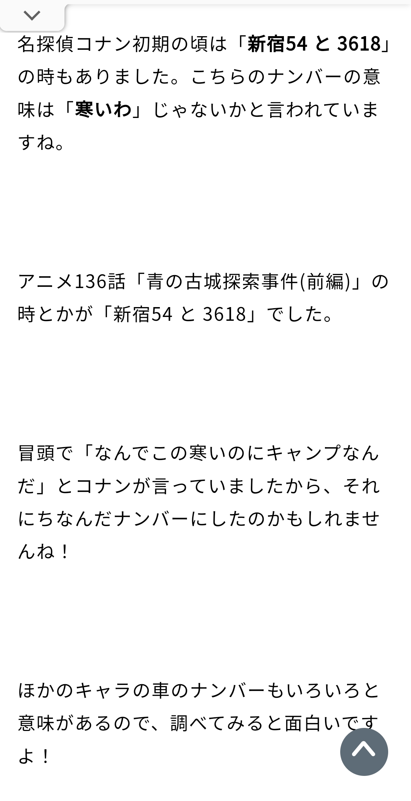

追车那段戏，阿笠博士开的车牌号为【1—64】
1＝新一
6＝lock（日语的6读作ロク，可以谐音ロック，也就是lock之意）
4=志保
所以，阿笠博士的车牌号连起来是:
新一 ロック志保
（新一锁定志保）
其实这里可以写成146啊，也就是新志锁死，但青山没有
他要强调新一 → 志保
再回头看，好像还有可以深究的东西
比如，73把小哀拿着柯南眼镜感慨“护身符”的那一幕定义为【全篇唯一能看出哀→柯的一幕】
不细究的话，就只是将小哀对柯南的感情明朗化，细究的话:
【唯一能看出哀→柯的一幕】，73说的这句话，是不是还藏了后半句？
也就是被很多同好表达过的饮水鸟箭头这种醋包饺子的情节:
【，除此以外，所有画面的箭头都是反过来的】
————
顺带一提宾加，宾加的车牌号是429
4＝志保
2＝に＝助词
9＝きゅう＝きゅうしゅつ（救出）
宾加的车牌号连起来就是:
志保に救出（救出志保）
但凡看过漫画都会知道，73经常玩数字谐音梗，他都能把志保名字、也就是【しほ】的ほ（ho）谐音对应到フォー（four），我第一次看到这里还觉得73也太执着了
然后顺着他的思路找线索，这才发现，真香
1＝新一
6＝lock（日语的6读作ロク，可以谐音ロック，也就是lock之意）
4=志保
所以，阿笠博士的车牌号连起来是:
新一 ロック志保
（新一锁定志保）
其实这里可以写成146啊，也就是新志锁死，但青山没有
他要强调新一 → 志保
再回头看，好像还有可以深究的东西
比如，73把小哀拿着柯南眼镜感慨“护身符”的那一幕定义为【全篇唯一能看出哀→柯的一幕】
不细究的话，就只是将小哀对柯南的感情明朗化，细究的话:
【唯一能看出哀→柯的一幕】，73说的这句话，是不是还藏了后半句？
也就是被很多同好表达过的饮水鸟箭头这种醋包饺子的情节:
【，除此以外，所有画面的箭头都是反过来的】
————
顺带一提宾加，宾加的车牌号是429
4＝志保
2＝に＝助词
9＝きゅう＝きゅうしゅつ（救出）
宾加的车牌号连起来就是:
志保に救出（救出志保）
但凡看过漫画都会知道，73经常玩数字谐音梗，他都能把志保名字、也就是【しほ】的ほ（ho）谐音对应到フォー（four），我第一次看到这里还觉得73也太执着了
然后顺着他的思路找线索，这才发现，真香

🐮
还有磕点?
这个应该是阿笠博士名字的谐音吧。ひろし→164
2024-06-15 02:22 | 丨七七大王丨:笑死，我这个cp脑又磕到了，博士不愧是柯哀证婚人
我也觉得164是博士的谐音ひろし=ひ（と）+ろ（く）+し
博士车牌号最早是3618（TV10赤木量子案），后来改成了164（TV163太阳月亮星星开始）
博士车牌号最早是3618（TV10赤木量子案），后来改成了164（TV163太阳月亮星星开始）
补充一下，164前面的假名一开始是あ，后来改成了ひ。可能あ是阿笠的あ，ひ是博士的ひ？
放一下我找到的最早使用这几个车牌的地方
赤木量子案，と36 18
太阳月亮星星，あ1 64
金钱买不到的友情，ひ1 64（不太清楚）
四辆保时捷，清楚的ひ1 64
放一下我找到的最早使用这几个车牌的地方
赤木量子案，と36 18
太阳月亮星星，あ1 64
金钱买不到的友情，ひ1 64（不太清楚）
四辆保时捷，清楚的ひ1 64




2024-06-14 12:22 | 平者深黑:と3618不知道是谐的什么音还是别的
M26是伏特加开的车。4月29日是伏特加声优立木文彦的生日，拿声优的生日当车牌也是常规操作之一了
还有高手？


小五郎虽然是租车，但是好像也会选自己的名字的谐音5560=ごごろおも可能是毛利的も，至于わ……我没看出来是什么
2024-06-14 23:31 | 贴吧用户_atS9tXN:你怎么找这么快2024-06-15 00:58 | 平者深黑:回复 贴吧用户_atS9tXN :在百科上搜的2024-06-15 02:44 | 贴吧用户_GDP5A55:回复 平者深黑 :这些玩意儿都能搜到。
卷福版福尔摩斯的剧情
列文虎克！
9，因为6翻了
列文虎克
阿笠博士的旧车牌「新宿54と3618」似乎在青色古堡案件也出现过一次，有日本网站尝试作了解读，但也无法解释赤木量子那一话的车牌。

确实，广东人表示粤语6的读音跟日语差不多，后面都是个k的入声，但粤语入声不发声，而是最后停留在k这个辅音的口型。而日语倒是把k的音也发出来，所以和lock的读音更像